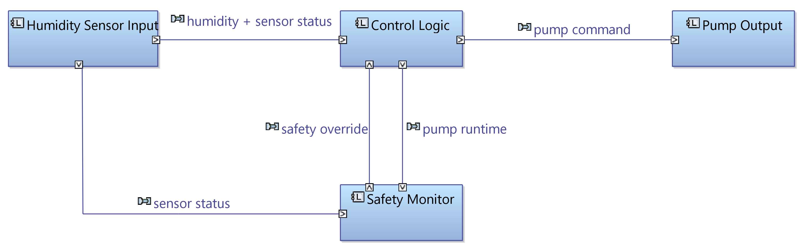

1 - Logische Systemarchitektur (Capella / MBSE)
Die logische Architektur des Controllers wurde in Capella (Arcadia / MBSE) modelliert. Sie zeigt die funktionalen Blöcke und ihre Datenflüsse, mit einem bewusst separaten Safety Monitor, getrennt von der normalen Steuerlogik.

Die Steuerlogik (Control Logic) und die Sicherheitsüberwachung
(Safety Monitor) sind getrennt: der Safety Monitor erzwingt Fail-Safe bei
Sensorfehler und stoppt die Pumpe bei Überschreitung der maximalen Laufzeit (als Überflutungsschutz gedacht, siehe Bekannte Grenzen)
2 - Anforderungen & Traceability
Jedes Verhalten ist als nummerierte Anforderung spezifiziert, und jede Anforderung wird durch mindestens einen automatisierten Test verifiziert — dasselbe Prinzip wie DOORS (Anforderungen) und XRAY (Testmanagement) in regulierten Branchen (ISO 26262, EN 50128, DO-178C).
| ID | Anforderung | Test |
|---|---|---|
| REQ-01 | Pumpe bei Initialisierung aus (sicherer Startzustand) | ✅ |
| REQ-02 | Niedrige Feuchte → Pumpe an (< 30 %) | ✅ |
| REQ-03 | Hohe Feuchte → Pumpe aus (> 70 %) | ✅ |
| REQ-04 | Hysterese (Pumpe hält Zustand zwischen den Schwellen) | ⚠️ nur teilweise |
| REQ-05 | Sensorfehler → Pumpe zwangsweise aus (Fail-Safe) | ✅ |
| REQ-06 | Max. Laufzeit → Pumpe stoppt (Überflutungsschutz) | ⚠️ unvollständig |
| REQ-07 | Invariante: LOW < HIGH Schwellenwert | ✅ |
7 Anforderungen, jede mit mindestens einem Test verknüpft; 5 vollständig verifiziert, 2 mit bekannten Lücken (siehe Bekannte Grenzen). Details: Requirements · Traceability Matrix
3 - Build- & Test-Pipeline
Drei Ebenen, von der Logik bis zur simulierten Hardware:
4 - Bugs während der Entwicklung
Bug 1: HardFault beim Boot in QEMU
qemu: fatal: Lockup: can't escalate 3 to HardFault,
Program Counter blieb bei 0x00000000 stecken.
Diagnose: objdump -t firmware.elf zeigte korrekt platzierte Symbole,
aber qemu -d in_asm Tracing enthüllte, dass die Ausführung nie die Adresse 0x08000000 erreichte.
Root Cause: Linker-Script nutzte STM32-typische FLASH-Adresse (0x08000000),
aber die QEMU-Maschine lm3s6965evb erwartet Code ab 0x00000000.
MEMORY
{
FLASH (rx) : ORIGIN = 0x00000000, LENGTH = 256K /* vorher: 0x08000000 */
RAM (rwx) : ORIGIN = 0x20000000, LENGTH = 64K
}
Bug 2: Vertauschte Schwellenwerte
HUMIDITY_LOW_THRESHOLD
und HUMIDITY_HIGH_THRESHOLD — die bestehenden Tests bemerkten es zunächst nicht,
da sie nur Extremwerte prüften.
Lösung: Ein neuer Sanity-Check-Test wurde hinzugefügt, der explizit die korrekte Reihenfolge der Schwellenwerte validiert — dieser Test deckte den Bug zuverlässig auf.
void test_thresholds_are_correctly_ordered(void) {
TEST_ASSERT_TRUE(HUMIDITY_LOW_THRESHOLD < HUMIDITY_HIGH_THRESHOLD);
}
5 - CI/CD Pipeline
jobs:
native-tests: # Schnelle Validierung der Logik
- gcc compile + run Unity tests
arm-cross-compile: # Echte Zielarchitektur
needs: native-tests
- install gcc-arm-none-eabi + qemu-system-arm
- arm-none-eabi-gcc cross-compile -> firmware.elf
- qemu-system-arm Start (ohne Auswertung, siehe Bekannte Grenzen)
- upload firmware.elf als Artifact
6 - Zusammenfassung
| Komponente | Technologie | Status |
|---|---|---|
| Sprache | C (Bare-Metal) | ✅ |
| Zielarchitektur | ARM Cortex-M | ✅ |
| Cross-Compiler | arm-none-eabi-gcc | ✅ |
| Unit Tests | Unity Framework (7/7) | ✅ |
| Hardware-Simulation | QEMU (lm3s6965evb), Start ohne Testauswertung | ⚠️ |
| CI/CD | GitHub Actions | ✅ |
| Systems Engineering | Requirements + Traceability (DOORS/XRAY-Prinzip) | ✅ |
| Architektur | Capella / MBSE (logische Architektur) | ✅ |
| Git Workflow | Feature/Fix Branches, Pull Requests, Merges | ✅ |
| Debugging | objdump, QEMU Tracing | ✅ |